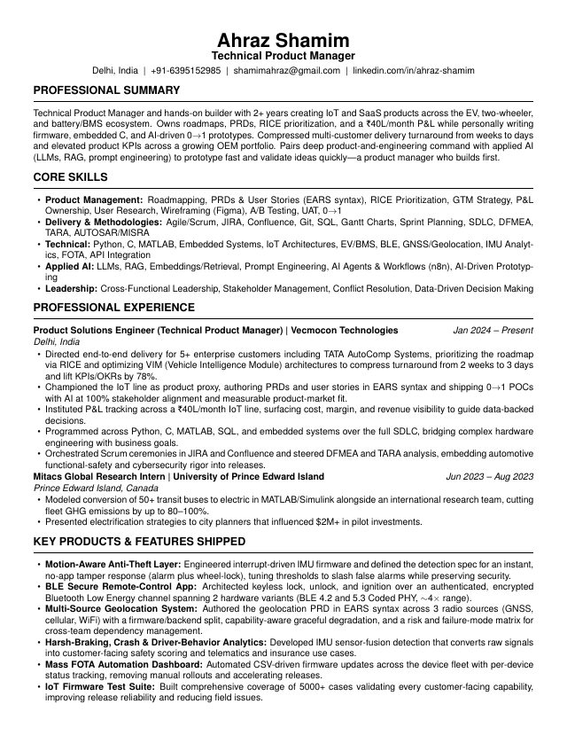
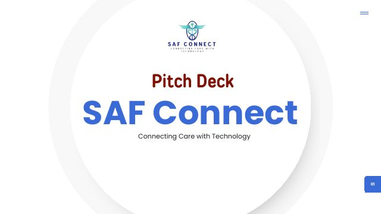
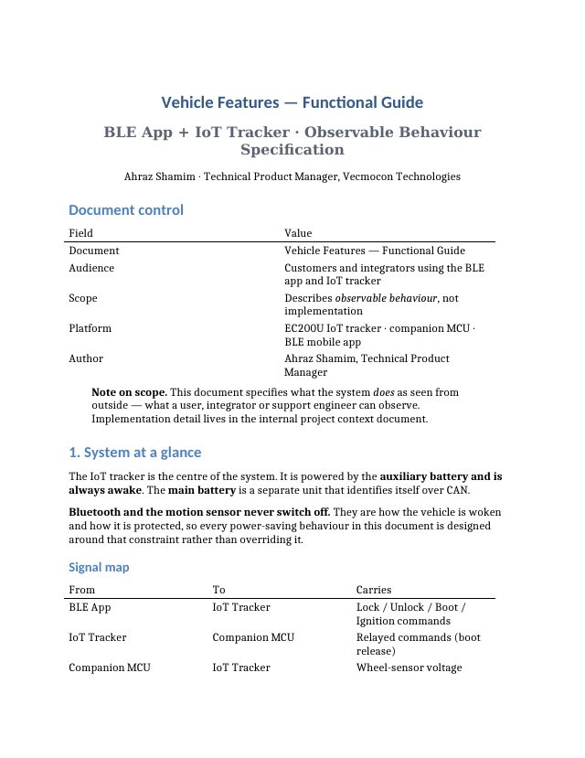
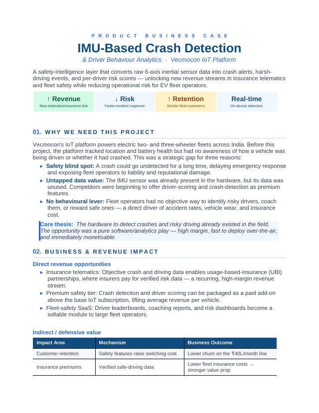
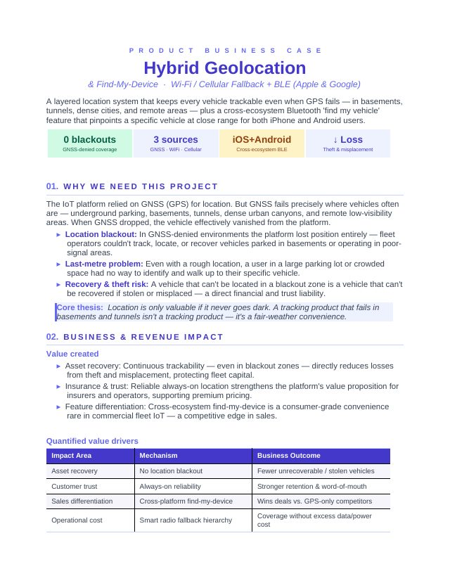
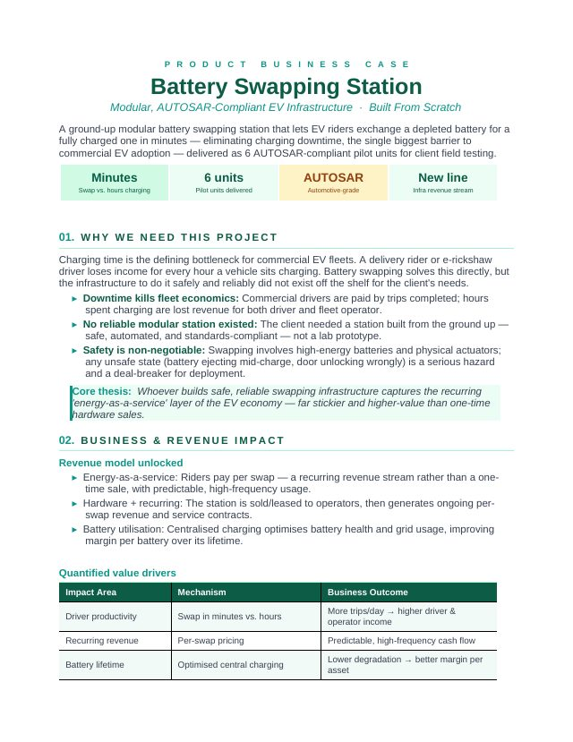
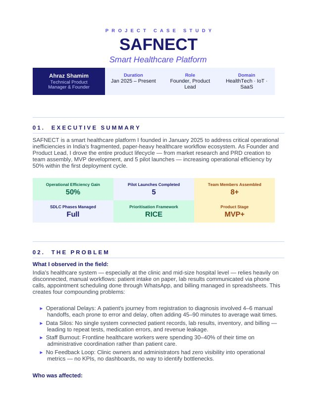

I ship products and the firmware underneath them.
I am Ahraz Shamim. For more than two years at a hardware startup, I have owned roadmaps, PRDs, RICE prioritization, and a ₹40L/month product P&L, while also personally writing the embedded C, Python, and AI prototypes that make those roadmaps real. That combination is the point. I can sit in a pricing review in the morning and debug an IMU interrupt in the afternoon, and neither conversation needs a translator.
About
A PM who builds first.
I work at Vecmocon Technologies, where we build the IoT and intelligence layer for electric two-wheelers, including vehicle control units, battery management, and telematics. In a startup you do not get to pick one hat, so I wear two. I act as product proxy for the entire IoT product line, and I am also in the codebase.
That means the PRDs I write are ones I could implement myself. When I specify a WiFi scan duty cycle, I have already checked it against the sleep mode current budget. When I set an anti-theft threshold, I know it is a UX decision disguised as an engineering one. This approach means fewer round trips and fewer specs that fail once they meet real hardware.
Alongside that, I founded SAF Connect, a healthcare platform, and I use AI the way a good PM should: not as a novelty, but as a prototyping engine. Building a working proof of concept in a day, instead of waiting on a two week estimate, changes which ideas are even worth arguing about.
What I own day to day
- Roadmap and RICE prioritization for the IoT product line
- PRDs and user stories in EARS requirements syntax
- Product P&L: cost, margin, and revenue visibility
- Scrum ceremonies in JIRA and Confluence, with 5+ enterprise deliveries
- DFMEA and TARA for functional safety and automotive cybersecurity
- Hands-on firmware, Python tooling, dashboards, and 0→1 POCs
Certifications
- IBM AI Product Management Professional Certificate, Coursera
- Google Project Management Professional Certificate, Coursera
- Prompt Engineering course, completed
Selected work
Case studies
Six deep dives where the product decision and the technical decision were the same decision. Each covers the problem, the calls I made, the trade-offs, and what shipped.
Connected Vehicle Security & Control Platform
↗Keyless BLE control, three-tier power management, motion-aware anti-theft, CAN battery interlocks, and network-independent Find My recovery come together as one integrated system. Each feature constrains every other, which is why the whole thing had to be designed as a platform rather than a backlog.
SAF Connect, Healthcare Platform
↗The work included 80% problem validation, dual personas, value proposition and lean canvases, a competitor matrix against Practo and the HMS incumbents, and TAM, SAM, and SOM sizing from public data. It also covered a sales funnel and a full GTM plan, followed by an MVP that went through five pilots.
Multi-Source Geolocation System
↗This system resolves one vehicle position from three radio sources: GNSS, cellular, and WiFi, across two hardware generations from a single firmware codebase. It is built on a PRD written in EARS syntax, a clean collect and resolve split, and a failure mode matrix, so neither team could silently break the other.
Mass FOTA Automation Dashboard
↗Firmware rollouts used to require a person, a terminal, and a device list. Now an operator just uploads a CSV and starts a campaign. It is self-serve, shows per-device status, and keeps engineers out of the loop: a classic case for building the boring internal tool.
IMU Crash Detection & Driver Analytics
↗The sensor was already in every device we had shipped, and nobody was reading it. This project turned a dormant six-axis IMU into crash alerts, driver risk scores, and the foundation of an insurance telematics revenue line, all without new hardware and deployed over the air to the installed base.
Modular Battery Swapping Station
↗This was built from nothing, because no off-the-shelf reference existed. It uses a safety-gated swap sequence where unsafe states are physically impossible rather than merely discouraged. The system was modelled in Stateflow, generated as MISRA C, and delivered as six AUTOSAR-compliant pilot units.
Also shipped
IoT Firmware Test Suite
This suite covers more than 5,000 test cases spanning every customer-facing capability the IoT module ships. It treats quality as a product feature rather than a phase, which has raised release confidence and lowered field and service issues.
DFMEA + TARA Programme
I ran a Design Failure Mode and Effects Analysis on the product and a Threat Analysis and Risk Assessment on the security surface. This embeds automotive functional safety and cybersecurity rigor into the release process, rather than bolting it on at audit time.
Transit Fleet Electrification Model
I simulated converting more than 50 transit buses to electric in MATLAB and Simulink with an international team at the University of Prince Edward Island. The model cut projected fleet GHG emissions by 80 to 100% and shaped strategies presented to city planners, which helped influence more than $2M in pilot investment.
n8n Automation Agents
I built agent workflows in n8n, including an end-to-end job application outreach pipeline that tailors a résumé for each role and drafts the outreach message. This is practical proof of LLM and RAG understanding, rather than a certificate that just claims it.
The arc
Four years, three acts
Student team lead → international researcher → technical PM → founder. Each act moved me further from the soldering iron and closer to the P&L, without ever letting go of the first one.
The dashed line is the point: commercial ownership climbed without technical depth ever being traded away for it.
Make the thing work
Leading a student EV team taught me the part no course does: a prototype nobody funded is a hobby. Raising ₹2.5L was the first time engineering and persuasion turned out to be the same job.
Make the thing pay
At Vecmocon I stopped asking "can we build it" and started asking "should we, and what does it earn". That meant P&L tracking, RICE prioritization, and five enterprise customers, all while still writing the firmware underneath.
Decide what the thing is
SAF Connect removed every external constraint: no brief, no backlog, no team. It taught me that when nothing is decided for you, scope discipline is the whole job.
Experience
Where I've done it
Product Solutions Engineer (Technical PM)
- Directed end-to-end delivery for 5+ enterprise customers, including TATA AutoComp Systems. I prioritized the roadmap with RICE and re-architected VIM (Vehicle Intelligence Module) configurations to compress turnaround from 2 weeks to 3 days, lifting KPIs and OKRs by 78%.
- Acted as product proxy for the IoT product line: translated business requirements into PRDs and user stories in EARS syntax, and shipped 0→1 POCs built with AI to validate direction before committing engineering quarters.
- Initiated Product P&L tracking across a ₹40L/month IoT line, surfacing cost, margin, and revenue per offering so prioritization arguments could be settled with numbers.
- Built hands-on across Python, C, MATLAB, SQL and embedded systems over the full SDLC, bridging hardware engineering and business goals.
- Ran Scrum ceremonies in JIRA + Confluence, launched customer training that reduced inbound service requests, and drove competitive analysis and market research.
Founder
- Drove the product from ideation: market research validating the problem with 80% of interviewees, dual user personas, value-proposition and lean canvases, competitor analysis and TAM/SAM/SOM sizing.
- Crafted the product vision and a PRD with RICE prioritization; assembled and led a cross-functional team from zero.
- Managed the full SDLC for a healthcare MVP through 5 pilot launches, raising operational efficiency +50% via KPI tracking and feedback-driven GTM refinement.
Mitacs Globalink Research Intern
- Modelled the conversion of 50+ transit buses to electric in MATLAB/Simulink with a multidisciplinary international team, cutting modelled fleet GHG emissions by 80 to 100%.
- Presented electrification strategies to city planners; the work influenced $2M+ in pilot investment.
Team Lead, Effi-Cycle Hybrid EV
- Engineered an award-winning EV prototype with path braking, parking assistance, energy regeneration, and drowsiness detection, contributing to a 30% reduction in parking accidents in testing.
- Secured ₹2.5 Lakh in sponsorship funding and led the team through build and competition.
B.Tech, Electrical Engineering
Documents
The actual artifacts
Case studies tell you what I decided. These are the documents where I decided it: business cases, a functional spec, and a pitch deck. Click any cover to read it here without downloading anything.

Preview ⤢
Preview ⤢SAF Connect, Full Deck
Problem validation, personas, lean canvas, competitor matrix, market sizing and GTM.

Preview ⤢
Preview ⤢IMU Crash Detection & Driver Analytics
Revenue model, stakeholder alignment and detection architecture for monetising a dormant sensor.

Preview ⤢Hybrid Geolocation & Find-My-Device
Eliminating the GNSS blackout, plus cross-ecosystem BLE find-my-vehicle for iOS and Android.

Preview ⤢Modular Battery Swapping Station
Energy-as-a-service economics, safety-gated swap sequence and the AUTOSAR scope decision.

Preview ⤢Toolkit
Skills
This is not a claim to be the best on either axis. It is a claim that I do not need a translator between them.
What I actually do with them
Requirements that survive handoff
PRDs in EARS syntax, with failure-mode matrices so cross-team dependencies are managed rather than assumed.
Commercial ownership
Cost, margin, and revenue visibility across a ₹40L/month line, so prioritization arguments end in numbers.
Zero to one, twice over
A founded healthcare platform and a from-scratch swap station. Market research through to pilot launches.
Hands in the codebase
Embedded C, Python, MATLAB. I don't spec a scan duty cycle without checking it against the power budget.
Discovery & research
Personas, JTBD, competitor matrices, TAM/SAM/SOM. 80% problem validation before a line of SAF Connect existed.
Agile delivery
Scrum ceremonies in JIRA and Confluence across 5+ enterprise customers, including TATA AutoComp.
Safety & compliance
DFMEA, TARA, AUTOSAR, and MISRA bring automotive rigor embedded in the process, not bolted on at audit time.
AI as a prototyping engine
LLMs, RAG, agent architectures and n8n workflows. A working POC while the traditional path writes an estimate.
Product
Delivery & methodology
Leadership
Technical
Applied AI
On AI, specifically
I understand how these models actually work, including retrieval, embeddings, and agent loops, not just how to type into a chat box. I build automation agents in n8n, and I use AI for instant prototyping, putting a working proof of concept in front of stakeholders while the traditional path is still writing the estimate.
Recommendations
From people I've worked with
Colleagues, managers, clients, and teammates: if we have worked together, the form below goes straight to me. I read every submission before it appears here.
Worked with me? I'd value your words.
A recommendation from someone who has actually shipped alongside me is worth more than anything I can write about myself. It takes two minutes.
- Write it in your own voice. Being specific matters more than being flattering.
- Mentioning what we worked on together helps a reader place it.
- I review each submission before publishing, so it won't appear instantly.
Prefer LinkedIn? Leave it there instead ↗
Contact
Let's talk.
I am open to Product Manager, Technical PM, and Program Manager roles, and I am always happy to talk about IoT, EVs, or using AI to get to a prototype faster.
- Email shamimahraz@gmail.com
- Phone +91 63951 52985
- LinkedIn /in/ahraz-shamim ↗
- Résumé Download PDF ↓
- Based in Delhi, India · open to relocation
Documents
- Portfolio Technical projects portfolio (.docx) ↓
- Spec Vehicle Features Functional Guide (.docx) ↓
- Deck SAF Connect pitch deck (.pdf) ↗
- Case study SAF Connect written case study ↓
- Business case Hybrid geolocation & Find My ↓
- Business case IMU crash detection & driver analytics ↓
- Business case Modular battery swapping station ↓
A PM who ships, and knows what shipping costs.
For two years I have owned a roadmap and a P&L while writing the firmware underneath it. If you are building something where the product decisions and the technical decisions are the same decisions, that is the room where I am most useful.